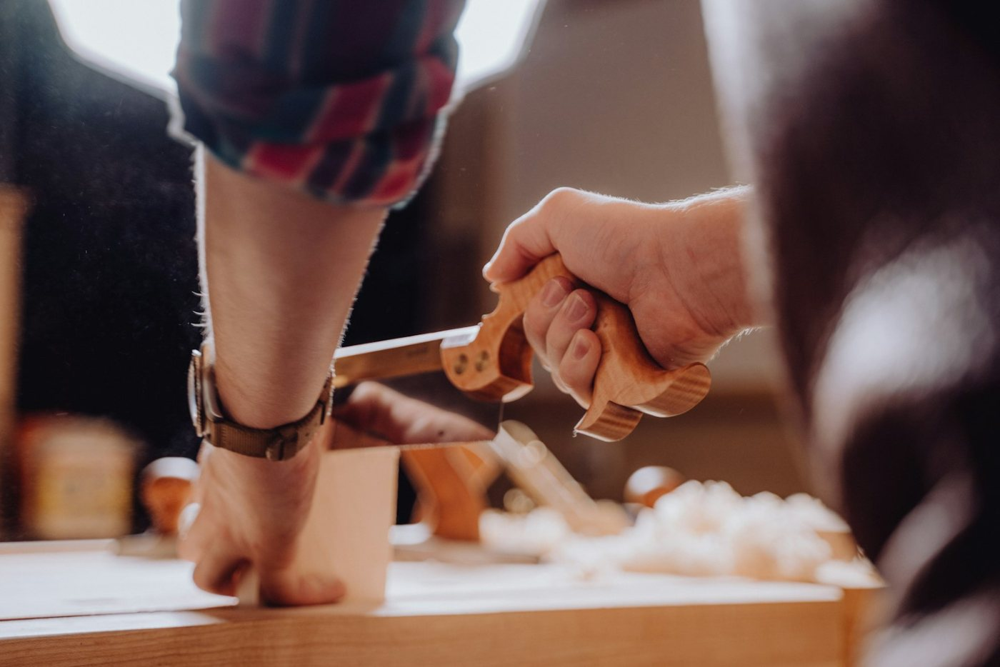

09 / 13
제작 과정
맞춤 액자는 여덟 단계를 거치며, 접착제가 굳는 하루가 가장 깁니다.
- 단계
- 8
- 손이 가는 시간
- 약 3시간 30분
- 기다리는 시간
- 접착제 굳힘 24시간
여덟 단계
01
치수 재기·상담
15분
작품의 가로·세로를 0.1 cm까지 재고, 몰딩·매트·유리를 견본을 대 보며 고른다. 주문서에 치수와 고른 것을 적고 찾는 날을 정한다.
02
몰딩 자르기
20분
몰딩을 45°로 네 번 자른다. 한 변의 길이는 안치수에 몰딩 폭의 두 배를 더한 값이다.
03
연귀 맞춤
24시간
잘린 끝에 목공 접착제를 바르고 직각 틀에 물려 모서리마다 V자 핀을 두 개씩 박는다. 접착제가 굳을 때까지 하루를 둔다.
04
매트 자르기
30분
매트 뒷면에 창을 그리고 45° 경사 칼로 자른다. 아래 여백을 위보다 1 cm 넓게 두는 것이 기본이다.
05
유리 자르기
20분
안치수보다 2 mm 작게 잘라 넣는다. 양면을 닦고 먼지를 불어 낸다.
06
작품 고정
30분
작품 윗변을 중성 종이 테이프 두 조각으로 뒷판에 건다. 아래는 붙이지 않아 종이가 습도에 따라 늘고 줄 수 있게 둔다.
07
봉함·고리
40분
뒷판을 넣고 둘레를 크라프트 종이로 봉해 먼지를 막는다. 높이의 3분의 1 지점에 고리를 달고 철사 줄을 건다.
08
검품·포장
15분
유리 안쪽 먼지, 모서리 틈, 고리 높이를 다시 본다. 모서리에 보호대를 끼우고 종이로 싼다.
영업일 5일은 앞선 주문이 차례를 기다리는 날을 더한 것이다.